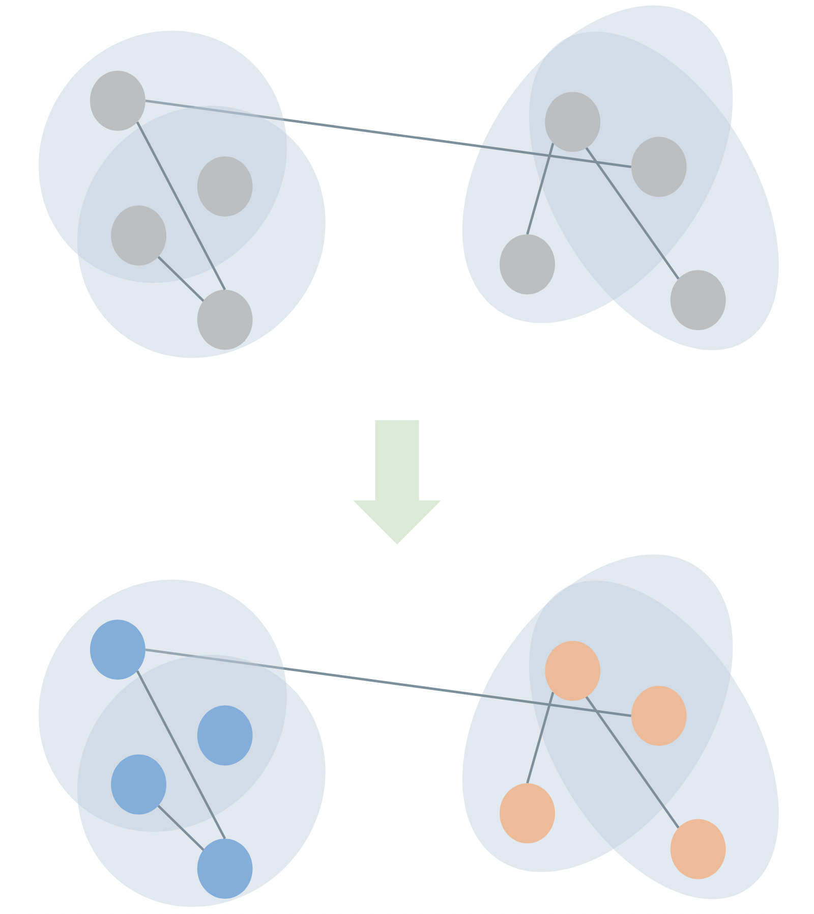

Hypergraph Data Science:
Challenges and Opportunities
Joint Math Meetings | Jan 5th, 2023
Dr. Phil Chodrow
Department of Computer Science
Middlebury College
This is a talk about what I have learned and what I am excited about in the mathematics of hypergraph data science.
This talk is unapologetically:
Personal
Biased
This is a talk about what I have learned and what I am excited about in the mathematics of hypergraph data science.
This talk is unapologetically:
Personal
Biased
Pink
A hypergraph is a
set of sets.
Image created using the xgi package: https://xgi.readthedocs.io/en/latest/
Hypergraph Data
Natural hypergraphs: multiway interactions between nodes.
Induced hypergraphs: nodes don’t interact directly, but are co-present in events, categories, etc.
Sampled graphs: dyadic interactions sampled from underlying polyadic phenomena.
Some Hypergraph Data Science Questions
Community detection, core-periphery
Does this hypergraph have meaningful clusters/communities/modules?
Centrality
Are some nodes/edges in this hypergraph more structurally important than others?
Link prediction
Can we predict where future hyperedges might appear?
Hypergraph recovery
If our data comes to us as a dyadic graph, can we infer the presence of latent hyperedges?
Image created using the xgi package: https://xgi.readthedocs.io/en/latest/
Graph Projections
One very natural thing to do is to work on graphs induced from the the hypergraph, such as the clique-projection or bipartite representation.

This is often reasonable and performant, but is Boring™ and can lead to poor results when not carefully checked against the data.
PSC (2020). Configuration models of random hypergraphs. Journal of Complex Networks, 8(3):cnaa018
So you want to “really” use hypergraphs…
By the End of This Talk…
…You’ll reason about some of the tradeoffs of addressing the absurd generality of hypergraph data.
…You’ll describe at least one reason why it is hard to beat graph methods.
…You’ll know (my take on) interesting future directions for network data science with hypergraphs.
Part I
Your Model Is Too Complicated
Hypergraph Community Detection
Problem: assign a discrete label vector \(\mathbf{z} \in \mathcal{Z}^n\) to the nodes of a hypergraph in a way that reflects “meaningful” structure.
Also called “clustering” or “partitioning.”
We often do this with a stochastic blockmodel (SBM), which expresses a probability distribution over hypergraphs with cluster structure.
Review in
PSC, N. Veldt, and A. R. Benson (2021). Generative hypergraph clustering: From blockmodels to modularity. Science Advances, 7:eabh1303

Canonical SBM
Specifies a probabilistic rate at which edges form on sets of nodes with specified labels.
\(\Omega(\color{#FFD447 }{\bullet}\color{#FFD447}{\bullet}\color{#FFD447}{\bullet}\color{#59C9A5}{\bullet}\color{#59C9A5}{\bullet}\color{#23395B}{\bullet})\)
\(=\)
(Normalized) expected # of edges on sets of 6 nodes with \(\color{#FFD447 }{3 \bullet}\), \(\color{#59C9A5}{2 \bullet}\), and \(\color{#23395B}{1\bullet}\).
Usually estimated through either maximum likelihood or Bayesian methods, once a labeling is chosen.
Degree-corrected SBMs for hypergraphs introduced by
Ke, Shi, and Xia (2020), Community Detection for Hypergraph Networks via Regularized Tensor Power Iteration, arXiv
Microcanonical SBM
Specifies an exact number of times that an edge is present on a set of nodes with specified labels.
\(\Lambda(\color{#FFD447 }{\bullet}\color{#FFD447}{\bullet}\color{#FFD447}{\bullet}\color{#59C9A5}{\bullet}\color{#59C9A5}{\bullet}\color{#23395B}{\bullet})\)
\(=\)
Exact # of edges on sets of 6 nodes with \(\color{#FFD447 }{3 \bullet}\), \(\color{#59C9A5}{2 \bullet}\), and \(\color{#23395B}{1\bullet}\).
Can be read off from data (once a candidate labeling is chosen).
Amburg et al. (2023), “An Information Theoretic Framework for Hypergraph Clustering”, In preparation
Example
In the canonical degree-corrected hypergraph SBM, an approximation of the maximum-likelihood inference objective is:
\[ Q(\mathbf{z}) = \sum_{\mathbf{z} \in 2^\mathcal{Z}}\left[ \mathbf{cut}(\mathbf{z}) \log \Omega(\mathbf{z}) - \mathbf{vol}(\mathbf{z}) \Omega(\mathbf{z}) \right] \]
Here, \(\mathbf{cut}(\mathbf{z})\) and \(\mathbf{vol}(\mathbf{z})\) quantify the alignment of the label vector \(\mathbf{z}\) with the hyperedge structure.
To make \(Q(\mathbf{z})\) small, we need to alternate:
- Minimize with respect to \(\mathbf{z}\).
- Re-estimate the value of \(\Omega(\mathbf{z})\) for each \(\mathbf{z}\).
Chodrow, Veldt, and Benson (2021), Generative hypergraph clustering: from blockmodels to modularity, Science Advances
How many parameters are we estimating in Step 2?
Parameter Counts in SBMs
The general number of parameters we need for an edge of size \(k\) and \(\ell\) possible cluster labels is:
\[ q(k, \ell) \triangleq \ell!\sum_{\mathbf{p} \in \mathcal{P}_k} \frac{1}{(\ell - \lvert\mathbf{p}\rvert)!}\;, \]
where \(\mathcal{P}_{k}\) is the set of integer partitions of \(k\).
Example: \(k = 6\), \(\ell = 10\):
\[ q(6, 10) = 10!\left[\frac{1}{4!} + \frac{1}{5!} + 2\frac{1}{6!} + 3\frac{1}{7!} + 3\frac{1}{8!} + \frac{1}{9!}\right] = 193,960. \]
üòë
Parameter Reduction
We can reduce the number of parameters required for these models by imposing structure on the rate \(\Omega\). For example, if we ignore group labels, we can treat \(\Omega\) as a function of sorted partition vectors (group size counts):
\[ \begin{aligned} \Omega(\color{#FFD447 }{\bullet}\color{#FFD447}{\bullet}\color{#FFD447}{\bullet}\color{#59C9A5}{\bullet}\color{#59C9A5}{\bullet}\color{#23395B}{\bullet}) &= \omega(\mathbf{p}(\color{#FFD447 }{\bullet}\color{#FFD447}{\bullet}\color{#FFD447}{\bullet}\color{#59C9A5}{\bullet}\color{#59C9A5}{\bullet}\color{#23395B}{\bullet})) \\ &= \omega(3, 2, 1) \end{aligned} \]
So,
\[ \begin{aligned} \Omega(\color{#FFD447 }{\bullet}\color{#FFD447}{\bullet}\color{#FFD447}{\bullet}\color{#59C9A5}{\bullet}\color{#59C9A5}{\bullet}\color{#23395B}{\bullet}) = \Omega(\color{#59C9A5 }{\bullet}\color{#59C9A5}{\bullet}\color{#59C9A5}{\bullet}\color{#23395B}{\bullet}\color{#23395B}{\bullet}\color{#FFD447}{\bullet}) \end{aligned} \]
etc.
Some Candidates
\(\omega_1(\mathbf{p}) = \begin{cases} \omega_1 &\quad p_1 = k \\ \omega_0 &\quad \text{otherwise} \\ \end{cases}\)
\(\omega_2(\mathbf{p}) = w(\lVert \mathbf{p} \rVert_{1})\)
\(\omega_3(\mathbf{p}) = w(\sum_{h} p_{h}^{-2})\)
\(\omega_4(\mathbf{p}) = w(p_2/k)\)
Just \(O(k_{\text{max}}^2)\) parameters needed to specify these functions.
These intensity functions are closely related to splitting functions in the terminology of:
Veldt et al. (2022). Hypergraph cuts with general splitting functions, SIAM Review
Discuss!
Which of the following hyperedges are “favored” (have higher scores) under each of the four candidate intensity functions?
\((\color{#FFD447 }{\bullet}\color{#FFD447}{\bullet}\color{#FFD447}{\bullet}\color{#FFD447}{\bullet}\color{#FFD447}{\bullet}\color{#FFD447}{\bullet})\)
\((\color{#FFD447 }{\bullet}\color{#FFD447}{\bullet}\color{#FFD447}{\bullet}\color{#FFD447}{\bullet}\color{#FFD447}{\bullet}\color{#59C9A5}{\bullet})\)
\((\color{#FFD447 }{\bullet}\color{#FFD447}{\bullet}\color{#FFD447}{\bullet}\color{#59C9A5}{\bullet}\color{#59C9A5}{\bullet}\color{#59C9A5}{\bullet})\)
\((\color{#FFD447 }{\bullet}\color{#FFD447}{\bullet}\color{#59C9A5}{\bullet}\color{#59C9A5}{\bullet}\color{#EF476F}{\bullet}\color{#EF476F}{\bullet})\)
Which function would you choose? What assumptions are you making about the kinds of edges you’d see in your data?
Some Candidates
\(\omega_1(\mathbf{p}) = \begin{cases} \omega_1 &\quad p_1 = k \\ \omega_0 &\quad \text{otherwise} \\ \end{cases}\)
\(\omega_2(\mathbf{p}) = w(\lVert \mathbf{p} \rVert_{1})\)
\(\omega_3(\mathbf{p}) = w(\sum_{h} p_{h}^{-2})\)
\(\omega_4(\mathbf{p}) = w(p_2/k)\)
Just \(O(k_{\text{max}}^2)\) parameters needed to specify these functions.
These intensity functions are closely related to splitting functions in the terminology of:
Veldt et al. (2022). Hypergraph cuts with general splitting functions, SIAM Review
Discuss!
\(\omega_1\) favors homogeneous edges.
Booking hotels in the same country
\(\omega_2\) favors edges with few distinct group labels.
Friend groups between grades in a primary school
\(\omega_3\) favors edges with balanced diversity.
Types of ingredients in recipes?
\(\omega_4\) favors edges with two balanced groups.
Party of members of US congressional committees.
Examples (except recipes) from
Chodrow, Veldt, and Benson (2021), Generative hypergraph clustering: from blockmodels to modularity, Science Advances
Some Candidates
\(\omega_1(\mathbf{p}) = \begin{cases} \omega_1 &\quad p_1 = k \\ \omega_0 &\quad \text{otherwise} \\ \end{cases}\)
\(\omega_2(\mathbf{p}) = w(\lVert \mathbf{p} \rVert_{1})\)
\(\omega_3(\mathbf{p}) = w(\sum_{h} p_{h}^{-2})\)
\(\omega_4(\mathbf{p}) = w(p_2/k)\)
Just \(O(k_{\text{max}}^2)\) parameters needed to specify these functions.
These intensity functions are closely related to splitting functions in the terminology of:
Veldt et al. (2022). Hypergraph cuts with general splitting functions, SIAM Review
Hooray!
So, we can make assumptions about the kind of structure in our data, and in doing so reduce the number of parameters we need to estimate.
\[ \begin{aligned} q_{\mathbf{p}}(\mathbf{z}) &= \mathbf{cut}_{\mathbf{p}}(\mathbf{z}) \log \omega(\mathbf{p}) - \mathbf{vol}_{\mathbf{p}}(\mathbf{z})\omega(\mathbf{p}) \\ Q(\mathbf{z}) &= \sum_{\mathbf{p} \in \mathcal{P}}q_{\mathbf{p}}(\mathbf{z}) \end{aligned} \]
- \(\mathbf{cut}_{\mathbf{p}}(\mathbf{z})\) and \(\mathbf{vol}_{\mathbf{p}}(\mathbf{z})\) are structural terms that describe how edges align to the candidate label vector \(\mathbf{z}\).
- \(\mathcal{P}\) is the set of all valid integer partitions up to the size of the largest edge present.
Chodrow, Veldt, and Benson (2021), Generative hypergraph clustering: from blockmodels to modularity, Science Advances
But…
This is where algorithmic considerations come into play.
Different affinity functions are better for different types of data; however…
We only know scalable algorithms for this one:
\(\omega_1(\mathbf{p}) = \begin{cases} \omega_1 &\quad p_1 = k \\ \omega_0 &\quad \text{otherwise} \\ \end{cases}\)
This works well…sometimes.
Your model is too complicated…
…but choosing parameterizations can help to simplify it.
These parameterizations always imply assumptions about how the structure you are looking for expresses itself in hypergraph edges.
They should be expected to work well when the assumptions are approximately correct for the data, and not otherwise.
Part II
Your Model Loses to Graph Methods
Part II
Your Model Loses to Graph Methods
When and why does your model lose to graph methods?
When and why is it hard to beat graph methods?
Your model will often tell you!
In our modularity paper, we considered an easily-optimizable objective where the intensity function \(\Omega\) only cares about whether an edge is fully homogeneous or not.
Chodrow, Veldt, and Benson (2021). Generative hypergraph clustering: From blockmodels to modularity. Science Advances, 7:eabh1303
\[ \begin{aligned} Q(\mathbf{z}) &\triangleq -\sum_{k\in \mathcal{K}} \color{#59C9A5}{\beta_k} q_k(\mathbf{z}) \\ q_k(\mathbf{z}) &\triangleq \mathbf{cut}_k(\mathbf{z}) + \color{#EF476F}{\gamma_k} \sum_{\ell \in \mathcal{Z}}\mathbf{vol}(\ell; \mathbf{z})^k \end{aligned} \]
\(\beta_k\): relative strength of community signal in edges of size \(k\), inferred from data.
\(\gamma_k\): resolution parameter for edges of size \(k\), inferred from data.
\(\mathbf{cut}_k(\mathbf{z})\): number of homogeneous \(k\)-edges under labeling \(\mathbf{z}\).
\(\mathbf{vol}(\ell; \mathbf{z})\): sum of degrees of nodes contained on community \(\ell\) under labeling \(\mathbf{z}\).
When and why is it hard to beat graph methods?
Projecting a \(k\)-edge into a \(k\)-clique generates \(\binom{k}{2}\) 2-edges.
If \(\beta_k\) \(\propto \binom{k}{2}\), then the signal preserved by this projection won’t depend strongly on \(k\) – and we might expect a graph method to pick it up well.
If not, we might expect projection to lose signal \(\implies\) hypergraph methods should do better.
PSC, N. Veldt, and A. R. Benson (2021). Generative hypergraph clustering: From blockmodels to modularity. Science Advances, 7:eabh1303
\[ \begin{aligned} Q(\mathbf{z}) &\triangleq -\sum_{k\in \mathcal{K}} \color{#59C9A5}{\beta_k} q_k(\mathbf{z}) \\ q_k(\mathbf{z}) &\triangleq \mathbf{cut}_k(\mathbf{z}) + \color{#EF476F}{\gamma_k} \sum_{\ell \in \mathcal{Z}}\mathbf{vol}(\ell; \mathbf{z})^k \end{aligned} \]
\(\beta_k\): relative strength of community signal in edges of size \(k\), inferred from data.
\(\gamma_k\): resolution parameter for edges of size \(k\), inferred from data.
\(\mathbf{cut}_k(\mathbf{z})\): number of homogeneous \(k\)-edges under labeling \(\mathbf{z}\).
\(\mathbf{vol}(\ell; \mathbf{z})\): sum of degrees of nodes contained on community \(\ell\) under labeling \(\mathbf{z}\).
hypergraph wins
varying signal strength
with edge-size
graph wins
constant signal strength
with edge-size
Your model loses to graph methods
Incorporating higher-order structure doesn’t always help!
Hypergraph methods outperform graph methods when edges of different sizes carry different signal about the structure you care about.
Every optimization-based graph/hypergraph algorithm is equally bad when averaged over possible data inputs.
Peel, Larremore, and Clauset (2017). The ground truth about metadata and community detection in networks. Science Advances

Part I
Your Model Is Too Complicated
Part III
Your Model Is Too Complicated Simple
Most Generative Models Have Independent Edges
\[ \mathbb{P}(\mathcal{E};\boldsymbol{\theta}) = \prod_k\prod_{R \in \binom{[n]}{k}} p_R(\boldsymbol{\theta})^{\mathbb{1}(R \in \mathcal{E})}(1-p_R(\boldsymbol{\theta}))^{\mathbb{1}(R \notin \mathcal{E})} \]
“If the parameters \(\boldsymbol{\theta}\) are known, then the probability of edge \(e\) being present in \(\mathcal{H}\) is independent of the presence of any other edges.”
This is extremely convenient for inference tasks, including maximum-likelihood (easy optimization) and Bayesian methods (easy integrals).
But hyperedges in real-world data appear highly dependent!
Example: Scholarly Collaboration
I have by now written two papers with Dr. Nicole Eikmeier at Grinnell College.
I knew that she’s an outstanding collaborator who shares my interests because of that first paper we worked on together.
Example: Scholarly Collaboration
If we model scholarly collaboration networks as hypergraphs (nodes are scholars, edges are projects), then the presence of one edge makes the presence of other edges more or less likely: the edges are not independent.
\[ \mathbb{P}(\text{paper}_1, \text{paper}_2) \neq \mathbb{P}(\text{paper}_1)\mathbb{P}(\text{paper}_2) \]
Generalized Erdős–Rényi models, stochastic blockmodels, sparse configuration models, etc. all fail to capture this mechanism, which poses problems for link prediction.
Predictive Models
\[ \begin{aligned} &\mathbb{P}(\text{edge on node tuple } R \text{ at time } t) \\ &= \\ &f(\text{edges on node tuples } S \text{ by time } t\\ &\;\;\text{ such that } S\cap R \neq \emptyset) \end{aligned} \]
Possible to explicitly model this dependence using statistical models (not interpretably generative).
Image from \(\implies\)
Modeling Considerations
Would you expect the likelihood of an edge forming to depend on the presence of prior edges if…
Nodes are chemical compounds, edges are medically useful drugs in which those compounds are ingredients.
Nodes are food ingredients, and edges are recognized recipes in which those ingredients are used.
Nodes are hashtags, and edges are posts that involve all those hashtags.
Your model is too simple…
…because it models independent hyperedges.
I’m excited about interpretable models that include inferrable mechanisms for edge correlations in hypergraphs.
Neural-network based methods with intriguing performance:
Yadati et al. (2020), NHP: Neural Hypergraph Link Prediction. CIKM 2020.
A null-model statistical approach:
Juul, Benson, and Kleinberg (2022), Hypergraph patterns and collaboration structure. arXiv:2210.02163
A generative model with some important restrictions:
Benson, Kumar, and Tomkins. (2018) Sequences of sets. KDD 2018
Summing Up
Hypergraph data is absurdly general.
Finding structure in absurd generality requires asking ourselves careful questions about our modeling assumptions and whether they match our reasonable expectations about the data.
Hypergraph methods are preferable to graph methods when the polyadic structure carries signal about your question that gets lost upon graph projections.
Hyperedges can fail to be independent in much richer ways than dyadic edges can – we should model that!

Image created using xgi: https://xgi.readthedocs.io/en/latest/
Thanks!
I have made a bibliography with some of my favorite references on hypergraph network data science:
Find it at this link or under the January 2023 news at www.philchodrow.com.
What are you excited about in hypergraph network data science?